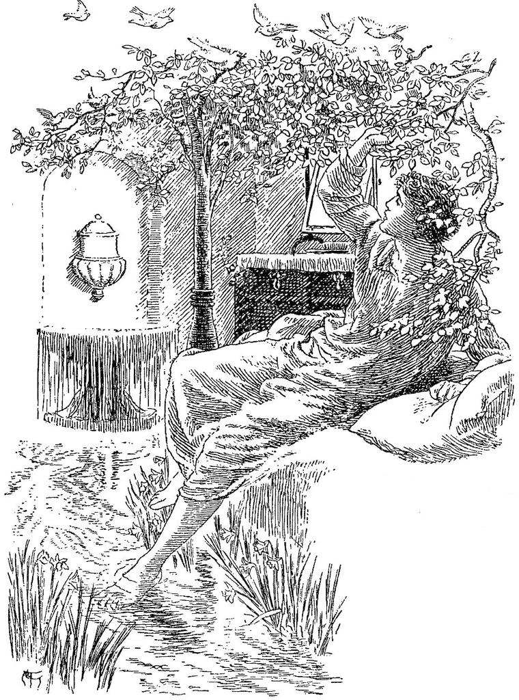

“‘Where is the stream?’ cried he, with tears. ‘Seest thou not its blue waves above us?’ He looked up, and lo! the blue stream was flowing gently over their heads.” —NOVALIS, Heinrich von Ofterdingen.
While these strange events were passing through my mind, I suddenly, as one awakes to the consciousness that the sea has been moaning by him for hours, or that the storm has been howling about his window all night, became aware of the sound of running water near me; and, looking out of bed, I saw that a large green marble basin, in which I was wont to wash, and which stood on a low pedestal of the same material in a corner of my room, was overflowing like a spring; and that a stream of clear water was running over the carpet, all the length of the room, finding its outlet I knew not where. And, stranger still, where this carpet, which I had myself designed to imitate a field of grass and daisies, bordered the course of the little stream, the grass-blades and daisies seemed to wave in a tiny breeze that followed the water’s flow; while under the rivulet they bent and swayed with every motion of the changeful current, as if they were about to dissolve with it, and, forsaking their fixed form, become fluent as the waters.
My dressing-table was an old-fashioned piece of furniture of black oak, with drawers all down the front. These were elaborately carved in foliage, of which ivy formed the chief part. The nearer end of this table remained just as it had been, but on the further end a singular change had commenced. I happened to fix my eye on a little cluster of ivy-leaves. The first of these was evidently the work of the carver; the next looked curious; the third was unmistakable ivy; and just beyond it a tendril of clematis had twined itself about the gilt handle of one of the drawers. Hearing next a slight motion above me, I looked up, and saw that the branches and leaves designed upon the curtains of my bed were slightly in motion. Not knowing what change might follow next, I thought it high time to get up; and, springing from the bed, my bare feet alighted upon a cool green sward; and although I dressed in all haste, I found myself completing my toilet under the boughs of a great tree, whose top waved in the golden stream of the sunrise with many interchanging lights, and with shadows of leaf and branch gliding over leaf and branch, as the cool morning wind swung it to and fro, like a sinking sea-wave.

After washing as well as I could in the clear stream, I rose and looked around me. The tree under which I seemed to have lain all night was one of the advanced guard of a dense forest, towards which the rivulet ran. Faint traces of a footpath, much overgrown with grass and moss, and with here and there a pimpernel even, were discernible along the right bank. “This,” thought I, “must surely be the path into Fairy Land, which the lady of last night promised I should so soon find.” I crossed the rivulet, and accompanied it, keeping the footpath on its right bank, until it led me, as I expected, into the wood. Here I left it, without any good reason: and with a vague feeling that I ought to have followed its course, I took a more southerly direction.